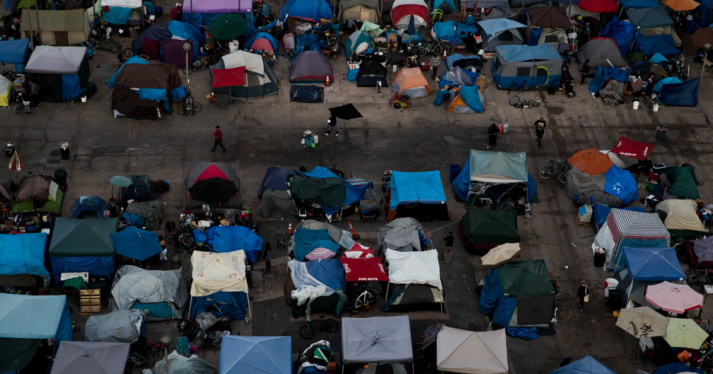

Through the years many things have been done to prevent homelessness but the issue
is rooted so deeply taht it's hard to prevent the issue. Through the years many presidents have made
great leaps to provide for people in poverty or people who are homeless. They have tried to stop the
situation before it even started but still this problem hits us right back. How we stop this problem?
We are still asking this today. One way we can help is by giving back to those in need and supporting
those people that need us most.